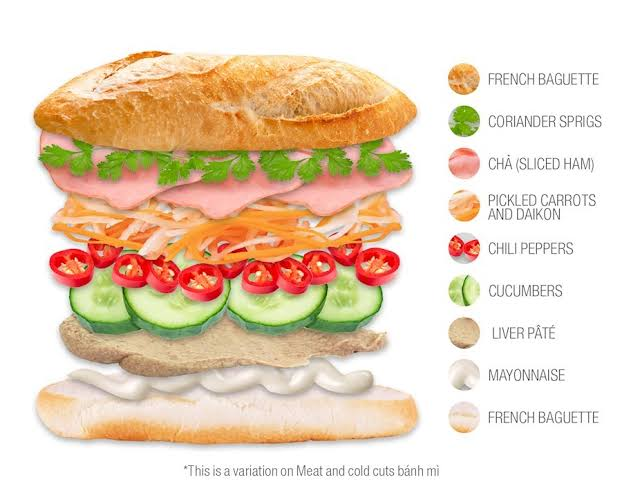
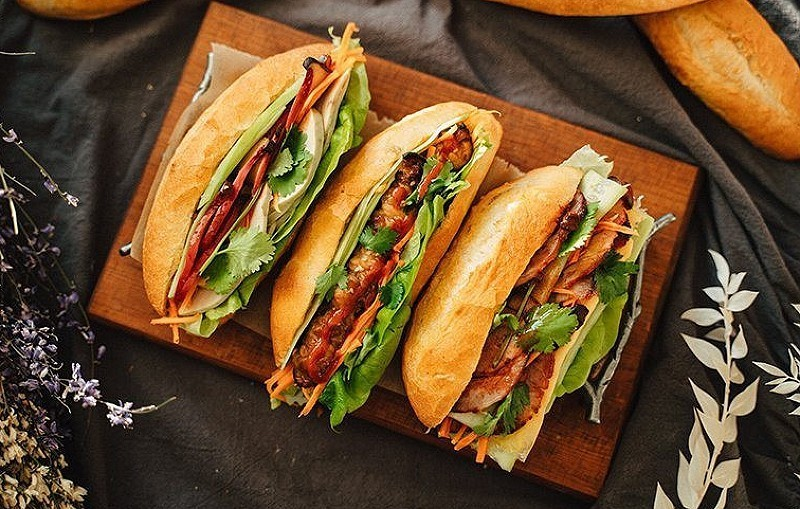
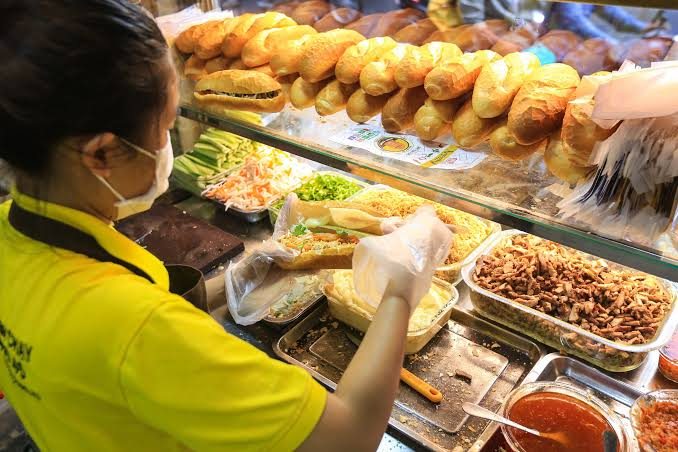

About
Banh mi is the most famous street food of Vietnam. This sandwich has a crispy crust and a soft inside, filled with meat, pate, fresh herbs, and tasty sauce. It is now known and loved all around the world.
Common Ingredients
- Crispy baguette
- Pate and butter
- Cold cuts, Vietnamese sausage, or grilled pork
- Cucumber, cilantro, pickled carrot and daikon
- Chili and sauce

Popular Types of Banh Mi
- Cold cuts banh mi
- Grilled pork banh mi
- Meatball banh mi
- Fried egg banh mi
- Fish cake banh mi

Where to Buy Banh Mi
- Street food carts
- Small family bakeries
- Local markets

Learn more about banh mi on Wikipedia.